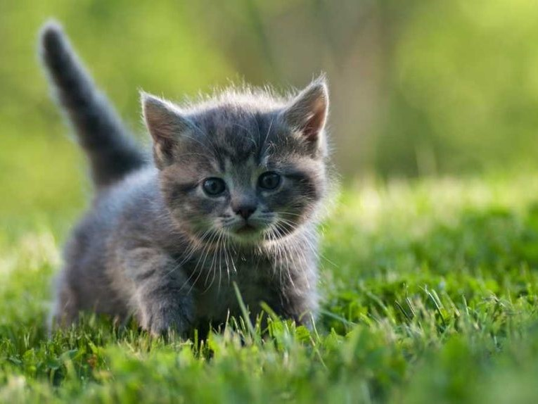
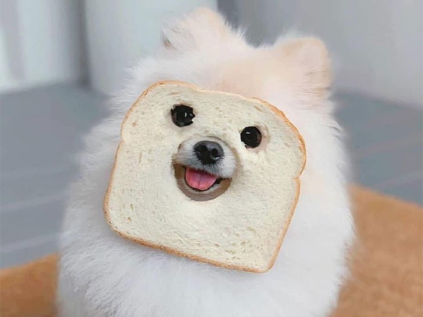
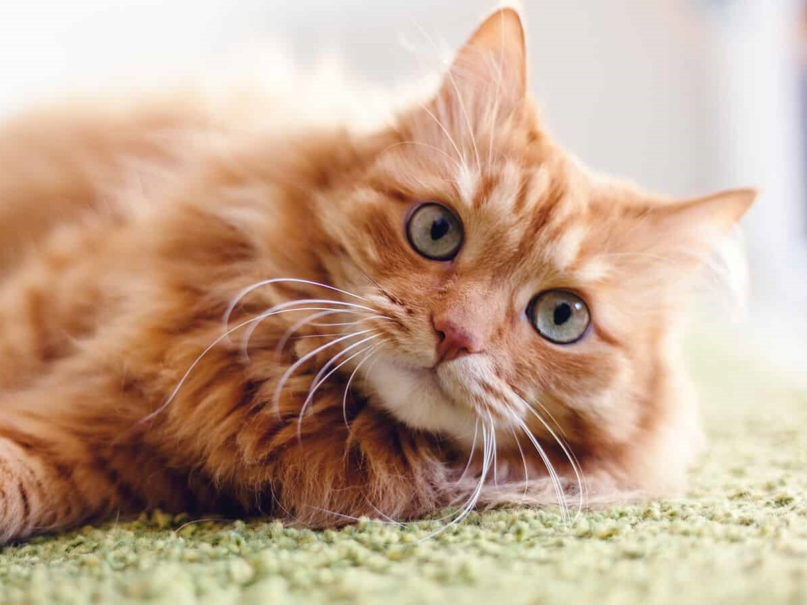

| Molly | Rosie | Tofu | Ralf | |
|---|---|---|---|---|
| Photo |  |  |  | |
| Age | 2 months | 1 year | 11 months | 2 years and 3 months |
| Favorite hobby | Playing | Napping | Barking | Cuddling |
| Least favorite hobby | Pooping inside the litterbox | Pretending to care | Meowing | Being outside |
| General statement | 3 AM is the best time to run around the house | I am just here to be pretty and get treats | Could be an impurrster | You will find cat hair everywhere and you will love it |